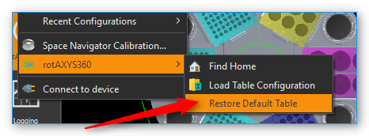
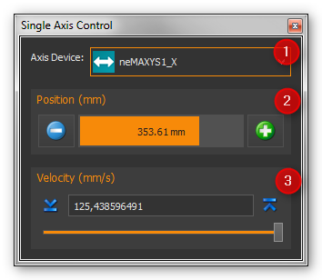
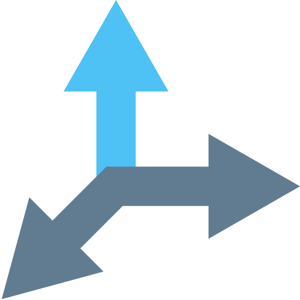

12. Rotaxys / Nemaxys Plugins
12.1. Introduction
These plugins support the control and visualization of various CETONI positioning systems such as Rotaxys and Nemaxys devices. For each device a View is created that provides all UI elements to manually control a single device (see image below).

You can show a View for a specific device via the main menu item or or via the corresponding buttons in the application Sidebar.
Such a view mainly consists of the following components:
Toolbar
Positioning map for XY positioning
Control pad for manual control
Z panel for positioning of Z axis (vertical axis)
Sidebar
Status Bar
12.2. Positioning Sidebar

In the sidebar, which can be turned on and turned off, you can find additional controls to configure and control your positioning systems. In the sidebar there is the Velocities panel where you can configure the velocities of all axes. All positionings in the Positioning Map or in the Z-Panel are then carried out with the set speeds.
12.3. Toolbar
|
Hides or shows the sidebar with additional configuration and control elements |
|
Adjust the magnification of the positioning map so that the complete display fits into the working area. |
|
Changes the magnification of the positioning map to the actual pixel size |
|
Increases the magnification factor |
|
Decreases the magnification factor |
|
Switches between free positioning and well positioning (see section 1.5 - Positioning Map) |
Adds the script function Move XY with the current XY position as target position parameter to the script editor |
|
|
Adds the script function Move Z with the current position of the Z axis as target position parameter to the script editor |
|
Immediately stops the movement of all axes of the positioning system |
|
Activates / deactivates the lift axis safety stroke. If it is active, then the Z-axis moves to a safe height before each movement in the XY plane. |
|
Sets the current Z-axis position as safe height. If the safety lift feature is active, then the positioning system moves to this height before each movement in the XY plane. |
|
Configure zero angle - the zero angle is never crossed by the axis system and it is the start and end point of the 360 ° rotation range |
|
Find Home - Executes a reference move to find the home position of the device |
12.4. Control Pad
12.4.1. Rotaxys
With the 6-way control pad, you can manually position all the axes of the Rotaxys positioning system.
|
Rotate the rotary axis counter-clockwise |
Rotate the rotary axis clockwise |
|
|
Move the radius axis away from the centre of rotation (increase radius) |
|
Move the radius axis toward the centre of rotation (decrease radius) |
Move the vertical axis up and down |


12.4.2. Nemaxys
With the 6-way control pad, you can manually position all the axes of the Nemaxys positioning system.
|
Moves X-axis to the left |
|
Moves X-axis to the right |
Moves the Y-axis toward the back of the device |
|
|
Moves the Y-axis toward the front of the device |
|
Move the vertical Z-axis up and down |


12.4.3. Changing the speed
When a direction is selected on the control pad, the corresponding axle is positioned at a fixed velocity. This velocity can be changed by simultaneously pressing a key on the keyboard. First press the key on the keyboard, and then click a direction button in the control cross.
The following keys can be used:
|
Shift key Increases the velocity by a fixed factor |
|
Control key Decreases the velocity be a fixed factor for precise, fine positioning |


Attention
Danger of damage through collision with the sample holder! For example, if there is a needle in a holder, ensure that moving the rotary or linear axis will not cause collisions when the tool tip is lowered.
12.5. Positioning Map
12.5.1. Introduction to Positioning Map
The positioning map is a top view of the XY plane of your axis system. It shows the travel range and and the worktable configuration of your device.
With the positioning map you can position your axis system in the XY plane by clicking points on the positioning map. The magnification of the positioning map can be changed via the context menu in fixed steps or continuously adjusted with the mouse wheel.
|
Increase magnification (zoom in) |
|
Decrease magnification (zoom out) |


For navigation within the positioning map you can also use the mouse. You can move the currently visible area with the two scroll bars on the right and bottom of the map Alternatively, you can also enable free mouse navigation mode. To do this, follow these steps:
Click the middle mouse button within the positioning map

It is now displayed a navigation cross and the free navigation mode is activated

You can now move the mouse to scroll the visible area of the positioning map. The further you move the mouse away from the on-screen navigation cross, the faster the positioning map is scrolled.
12.5.2. Positioning modes
The positioning map can be used in two different modes:
Free positioning mode
Container positioning mode

Switch between the two modes with the Positioning Map button in the toolbar or with the context menu of the positioning map. The current position of the device is indicated by a green cross on the positioning map (Figure below).

Important
In order to avoid collisions, the vertical axis always moves automatically into its topmost position before traveling to a position.
12.5.3. Free positioning mode

With free positioning, you can travel to all positions within a permissible area. The permissible area is indicated by a green border ❹ (see Figure above). When you move the mouse, the potential target position ❶ is indicated by a target cross consisting of two dashed lines. When you click the left mouse button on the target position, the positioning system travels to the selected position. The indicator of the current position ❷ then moves to the target position ❸.
12.5.4. Container positioning mode
In this mode, simply click in one of the existing containers such as fluid tanks or single wells in a titerplate to position. As soon as you have clicked the target container, the system automatically moves to the centre of the selected container.

The selected target container ❶ is coloured with the current highlight color.
12.5.5. Open context menu
Right-click on the positioning map to open the context menu.

12.6. Z panel for Positioning the Z axis
The Z panel on the right of the positioning map shows you the current position of the vertical axis, and gives you a number of ways of positioning the vertical axis. These are:
Buttons for predefined positions (lower button and raise button)
Height indicator (position lift axis)
Slider to select the target position
Graphical height indicator
12.6.1. Z panel Buttons for predefined Positions
The two raise and lower buttons ❶ (image above) simplify quick positioning of the vertical axis to previously defined positions. When you click one of the two buttons, the vertical axis travels at maximum velocity to the position previously defined for this button. With the two buttons you also define the travel range which can be selected with the position slider ❸ .
To assign the current position, right mouse click one of the two buttons, and then select from the context menu (see Figure below).

The assigned position is saved in the configuration data, and is still present when the software is restarted. The configured travel range with maximum and minimum position is indicated in the graphic height indicator by two blue markings (see section Height Indicator).
12.6.2. Height Indicator
The numerical height indicator shows you the current height of the axis in millimeters. A bar in the graphic display shows the current position of the axis within the range of travel.

Current position / height - the colored bar shows the current position of the axis
Software Limit Maximum - shows the maximum position you can select with the slider. The section Buttons for predefined Positions describes how to set the limit.
Software Limit Minimum - shows the minimum position you can select with the slider
Target selection mark - shows the potential target position, which becomes the target position by mouse click. The value for this position is displayed in the message window next to the marker
Target position - if you click with the mouse in the height display, a new target position is defined and the axis moves to this position. The new target position can only be within the software limits. If you click outside the limits, the axis moves to the corresponding limit.
Safe position for XY movement - indicates the safe position for XY movements for certain axis systems (e.g. rotAXYS). This means that if the axis is lower than this position, the axis is moved to this height before any XY movement.
12.7. Status Bar
You can read the current XY position and the current status of the device in the status bar of the Rotaxys working area at all times.

12.8. Z-Axis safety stroke

You can use this button in the toolbar to switch on and off the safety stroke of the Z-Axis. If it is active, then the Z-axis moves to a safe height before each movement in the XY plane. This prevents collisions with sample vessels or other objects on the worktable.

By pressing this button, you define the current position of the Z-axis as the clearance height. If the safety stroke is active, the positioning system will automatically go to this height before any XY positioning.
12.9. Configuring Well Plates (Rotaxys)
12.9.1. Introduction to Well Plate Configuration
Tip
This feature is available only for Rotaxys devices. If you have a Nemaxys or Rotaxys 360 device, then skip this section.
The Positioning Map always shows the currently configured well plate. You can configure new well plates in the software and assign it to Rotaxys device. To do this, select the main menu item (see figure below).

The configuration dialogue for well plates appears. This configuration dialogue is structured as follows (see figure below):
list of available well plates
configuration parameters of current plate
graphical representation of the current well plate
12.9.2. Selecting an existing well plate
If the list of available well plates ❶ already contains a suitable plate, simply select it by clicking on it and confirm the selection by clicking the OK button in the configuration dialogue.

12.9.3. Creating a new well plate
To create a new well plate, perform the following steps:
First you need to configure the well plate geometry in the Wellplate geometry panel ❷. You can configure the number of:guilabel Rows and Columns and the space between rows Row Spacing and columns Column Spacing. You will find the required data in the data sheet of the well plate.
Next, configure the geometry of the cavities in the Cavity geometry panel. Define the size of the cavities Cavity Size and their depth Cavity Height. Use the selection field Circular Cavities to determine whether the new plate should have round or square cavities.
Finally define the color of the new well plate. Choose the desired color in the Color selection box. If the right color is not available, select the entry More… The application shows a color selection dialogue (see figure below) that allows you to select any color.

Now click the Add Well Plate button to add the new plate to the list of available well plates. In the input dialogue that appears (see figure below), enter a unique name for the new well plate and press Enter or click OK.

The new well plate will be added to the list and can be selected from now on.
12.10. Configuring the Rotaxys 360 Worktable
Tip
This feature is available only for Rotaxys 360 devices. If you have a Nemaxys or Rotaxys device, then skip this section.
12.10.1. Load a work table configuration
For the Rotaxys 360 positioning system, the individual microtiter plates can not yet be configured by the user, as with the Rotaxys positioning system. However, the Rotaxys 360 positioning system supports the loading of preconfigured work table configuration files, which describe the entire configuration of a particular workbench.
To load a work table configuration, activate the graphical user interface of the corresponding Rotaxys 360 device. Then select from the main menu.

Then, in the file selection dialog that appears, select the configuration file for the work table and load it. The graphical representation of the work table is then immediately updated to the new configuration (see figure example configuration).

12.10.2. Restore standard work table
To restore the default work table, select from the main menu.
12.11. Zero angle configuration
The Rotaxys 360 axis system has an operation angle which is theoretically greater than 360 degrees. In order to prevent entanglement of the hose for fluid dosing, the turning range is limited to 360 °.

The zero angle ist the angle that will never be crossed by the positioning system. It is the start- and end-point of the 360° rotation range. If this angle is situated between two sample containers that you would like to process, the positioning system will choose the longer route in the opposite direction, so as not to cross the zero angle.

You can move the zero angle to a different angular position in order to circumvent this problem. Press the button for zero angle configuration (image left) to set a new zero angle.
|

In the dialog which is now displayed (see illustration above), you can freely set the zero angle in the range from 0 - 360 °.
12.12. SpaceMouse Support

The SpaceMouse is an intuitive input device which allows you to control all axes (rotation, radius and vertical axis) simultaneously. To use the SpaceMouse, connect it to an available USB port on your PC. Latest drivers can be found on our internet page:
http://www.cetoni.de/englisch/service/downloads_software.html
or on disk (CD or USB stick) you received when you purchased the software. Install the driver to use the SpaceMouse.

Position the SpaceMouse device, so that the cable leads away from you and that the 3D Connexion label is readable from your position.
12.13. Positioning Rotaxys with SpaceMouse
12.13.1. Rotaxys SpaceMouse Overview
|
Rotates the rotary axis clockwise or counter-clockwise |
|
Moves the radius axis away from or towards to the centre of rotation |
|
Move the vertical axis up or down |


Important
Don’t use the SpaceMouse if the software moves the positioning system (e.g., during active script execution), in order to not interrupt movements.
12.13.2. Positioning rotary axis
In order to position the rotary axis, rotate the SpaceMouse cap clockwise or counter-clockwise.

The speed of the axes can be determined by the strength of the deflection of the SpaceMouse cap. The harder you push or twist the cap, the faster the axes are moving. By a slight deflection of the cap, you can very finely and precisely control axis speeds.
Tip
The more you deflect the SpaceMouse cap, the higher are the axes speeds.
12.13.3. Positioning radius axis
To move the radius-axis, slide the cap of the SpaceMouse to the front or rear. To move the radius-axis to the outer radius, press away the control element from you. To move the radius axis to the centre of the rotation axis, pull the cap to your direction.

12.13.4. Vertical axis positioning
To position the Z-axis, press down the cap or pull it to the top. The Z-axis is moved in the direction in which you move the control element of the SpaceMouse.

12.14. Positioning Nemaxys with SpaceMouse
12.14.1. Nemaxys SpaceMouse Overview
|
Move X-axis to the left or right |
|
Move Y-axis forwards or backwards |
|
Positioning vertical Z-axis |

{kind=link}
{kind=link}
{kind=link}
{kind=link}
{kind=link}
Important
Don’t use the SpaceMouse if the software moves the positioning system (e.g., during active script execution), in order to not interrupt movements.
12.14.2. Positioning X-axis
To control the X-axis movement, slide the SpaceMouse’s control in the desired direction. Push the controller to the left, to move the X-axis leftwards and push it to the right to move the axis rightwards.
The speed of the axes can be determined by the strength of the deflection of the Space Navigator cap. The harder you push or twist the cap, the faster the axes are moving. By a slight deflection of the cap, you can very finely and precisely control axis speeds.
Tip
The more you deflect the SpaceMouse cap, the higher are the axes speeds.
12.14.3. Positioning Y-axis
To move the Y-axis towards the back of the device, press the controller forward. To move the positioning system towards the front of the device, pull the controller towards you.
Tip
You can control both directions at the same time if you move the controller forward or backward and to the left or right at the same time.
12.14.4. Vertical axis positioning
To position the Z-axis, press down the cap or pull it to the top. The Z-axis is moved in the direction in which you move the control element of the SpaceMouse.
12.15. Single Axis Control
In addition to the control of multi-axis systems the software also supports control of individual axis devices. This may be necessary if your axis system has additional tool axes (like second Z-axis or rotation axis) which are not part of the XYZ-multi-axis control.

You can show / hide the window for single axis control via the main menu item (figure below).
Tip
The single axis control window is a tool window and can be freely placed in the application window and docked in all four side areas.
The following control elements are available in the single axis control window:
Drop-down list Axis Device for selection of axis device to control.
In the Position area a progress bar shows the actual position in the range between minimum and maximum axis position. You can move the axis by pressing the plus / minus buttons. The movements continues as long as the buttons are pressed and stops immediately if a button is released.
In the Velocity area you can adjust the speed of axis move.
Tip
With the Move Axis script function you can control individual axes from a script program.
12.16. Additional Functions
12.16.1. Calibrating axis system
If the travel path of an axis is blocked (for example in the event of a collision), the stepper motors in the device may “lose” steps, so that the position values are no longer displayed correctly. In this case, the axis system has to be calibrated. To start calibration, select the menu item in the main menu (see Figure below). If you have a neMAXYS system, you can start the calibration via .

12.17. Positioning Script Functions
The plugin offers a number of script functions required for integrating the cetoni positioning systems in the CETONI Elements scripting system. The following script functions are available:

12.17.1. Move XY

This function is used in a script to position an XY axis system in the XY plane. You can select an axis system ❶ and the target position (X and Y positions) ❷ in the configuration area of this function. Alternatively, you can move the axis system manually to a specific position (for example with the positioning map), and then assign the current position values to the script function with the Capture Actual Position button (see Figure below).

If you make no further adjustments, all positionings are carried out with the maximum possible speed. If you want to change velocities, you need to expand the Axis Velocities control by clicking it. This control panel ❸ contains all control elements for entering velocity values for each single axis.
Use the Run to completion ❹ check box to determine whether the next function
will start immediately after the current positioning move started (Run to completion not checked)
or if the next function is called after the target position has been reached (Run to completion checked).
12.17.2. Move Z
{kind=link}
This function can be used to position the vertical axis (Z-axis) of an axis system. You can enter the axis system ❶ and the position parameters (Z position ❷ and velocity ❸) in the configuration area of this function. Alternatively, you can move the Z-axis manually to a specific position (for example with the Z panel), and then assign the current Z position to the script function with the Capture Actual Position button.

If you make no further adjustments, the positioning is carried out with the maximum possible speed. If you want to change velocities, you need to expand the Velocity control ❸ by clicking it. Another click on this element hides the velocity controls again.
Use the Run to completion ❹ check box to determine whether the next function
will start immediately after the current positioning move started (Run to completion not checked)
or if the next function is called after the target position has been reached (Run to completion checked).
Tip
If Run to completion is not activated, you can move several axes simultaneously. You can e.g. start positioning the XY-system, and while the XY-axes are moving, you can perform positioning with the Z-axis.
Important
The input fields for configuring the speeds are hidden by default, and must be displayed by clicking the Velocity label.
12.17.3. Find Home

This function allows you to start a reference move from the script. The positioning system moves to its reference position and initializes its distance measuring system. The Run to Completion parameter allows you to select whether the function should be terminated after the start of the reference move or when the reference move has been completed.
12.17.4. Move Axis

This function can be used to position a single axis device. Use the drop-down list Axis device ❶ to select the axis to be moved. You can enter the parameters (position ❷ and velocity ❸) in the configuration area of this function. Alternatively, you can move the axis manually to a specific position (for example with the Single Axis Control Panel), and then assign the current position to the script function with the Capture Position button.
If you make no further adjustments, the positioning is carried out with the maximum possible speed. If you want to change velocity, you need to expand the Velocity control by clicking it. Another click on this element hides the velocity controls again.
Use the Run to completion ❹ check box to determine whether the next function
will start immediately after the current positioning move started (Run to completion not checked)
or if the next function is called after the target position has been reached (Run to completion checked).
Important
The input fields for configuring the speeds are hidden by default, and must be displayed by clicking the Velocity label.
12.17.5. Move to container

This function is used to move an axis system in the XY plane to the centre a specific container (beaker, fluid tank, cavity of a well plate).
First you select the positioning device in the XY Device combo box ❶ (figure below). Then you select the target container in the container selection combo box ❷. If the container has several cavities (e.g. the wells of a well plate), enter the column and row of the cavity in the row and column input fields ❸. The numbering starts at zero. That means, for a microwell plate with 12 columns and 8 rows, you can enter values from 0 to 11 in the column input field and values from 0 to 7 in the row input field. If the container has only one single cavity (e.g. beaker or fluid tank) the input fields for row and column are greyed out.

If you make no further adjustments, all positionings are carried out with the maximum possible speed. If you want to change velocities, you need to expand the Axis Velocities control by clicking it. This control panel ❹ contains all control elements for entering velocity values for each single axis.
Use the Run to completion ❺ check box to determine whether the next function
will start immediately after the current positioning move started (Run to completion not checked)
or if the next function is called after the target position has been reached (Run to completion checked).
Tip
You can use script variables in the row and column input fields. This allows you to process all wells of a well plate in a loop using the loop counter variables.